© Oficina de l'energía i del Canvi Climàtic 2022
Nationally determined contribution of Andorra
Second update of the Nationally Determined Contributions to the United Nations Framework Convention on Climate Change (UNFCCC)
Presented and approved by the Government of Andorra, November 2, 2022
Lead authors:
Carles MIQUEL GARCIA
Albert GOMÀ ROCA Meritxell CUYÀS LAMANA Anna BONETA HERRERO
Delegated body in relation to the United Nations Framework Convention on Climate Change
Government of Andorra
Ministry of Environment, Agriculture and Sustainability Office of Energy and Climate Change
UNFCCC Focal Point
Carles MIQUEL GARCIA
Director of the Office of Energy and Climate Change Ministry of Environment, Agriculture and Sustainability C \ Prat de la Creu, 62-64
500 AD - Andorra la Vella Principality of Andorra
Telephone. (+376) 875,707 carles_miquel@govern.ad
Edition: Govern d ́Andorra
Design and layout: Office of Energy and Climate Change Photography: Sergi Pérez
© Government of Andorra
NDC: 24/3/2017
1st update: 20/05/2020
2nd update: 202/11/0221
Forests of muntanya. Ordino.
Nationally determined contribution of Andorra
glossary
AFOLU Agriculture, forestry and other land uses
AR6 Sixth IPCC evaluation report
BAU Business as usual
BUR Biennial Update Report
BTR Biennial Transparency Report
UNFCCC United Nations Framework Convention on Climate Change Centre for Historical and Political Studies
CNECC National Energy and Climate Change Commission
COP Conference of the Parties
INDC/INDC Nationally determined expected contributions
CRC Nationally Determined Contributions
CTP Working Community of the Pyrenees
COP Conference of the Parties
ENBA National biodiversity strategy of Andorra
MS Medical Emergencies
FAO Food and Agriculture Organization of the United Nations
FEDA Forces Elèctriques d'Andorra
GHG Greenhouse gases
Gg Gigagram, 1,000 tons, 1,000,000 kg, 1,000,000,000 g IPCC Intergovernmental Panel on Climate Change GWP Global Warming Power (GWP)
NC National Communication
NBS Nature-based solutions
SDGs Sustainable Development Goals
OIF International Organization of la Francophonie
NGO Non-governmental organization
United Nations
OPCC Pyrenean Climate Change Observatory
PAACC Participatory process on Andorra's adaptation to climate change
NAP National adaptation plan
GDP Gross Domestic Product
UNEP United Nations Environment Programme
EU European Union
SSP Shared socio-economic pathway
1. Preamble
On 2 March 2011, Andorra acceded to the United Nations Framework Convention on Climate Change (UNFCCC) as a non-Annex I party2.
During the nineteenth session of the Conference of the Parties (COP), held in Warsaw (2013), decision 1/CP.19, entitled Ways and means to further implement the Durban platform, was adopted, which states in paragraph 2, item b, that a protocol would be adopted at the twenty-first session (in December 2015), legal instrument or a mutually agreed text with legal value, prepared in accordance with the UNFCCC and applicable to all parties. In order for this instrument to enter into force and apply from 2020, it invited all parties to initiate or expand domestic preparations to develop their expected nationally determined contributions (INDCs), without prejudice to the legal nature of such contributions. All this with a view to the adoption of a protocol, other legal instrument or a mutually agreed text having legal force, developed under the UNFCCC and applicable to all parties. This, with a view to achieving the objective of the convention set out in Article 2 and communicating it well in advance of the 21st session of the Conference of the Parties (first quarter of 2015 for Parties that are ready to do so) to improve the clarity, transparency and understanding of planned contributions, without prejudice to the legal nature of such contributions.
In 2014, all parties were invited to communicate their first NDC before COP21, during the first quarter of 2015, in a clear, transparent and understandable manner (decision 13/CP.1, paragraph 20, of the 20th Conference of the Parties, Lima).
Andorra was one of the pioneers in communicating its INDC in 2015, according to which the commitment was to reduce GHG emissions by 37% compared to the Business as usual (BAU) scenario, 530.55 Gg CO2 eq., by 2030.
During the negotiation of COP21 (December 2015), the parties adopted decision 1/CP.21, which proposes a new strategy and becomes a necessary instrument for the implementation of the processes related to the fight against climate change, the Paris Agreement. This new agreement, signed by Andorra on 22 April 2016 and ratified by the Andorran parliament unanimously on 30 November 2016, has become a universal legal instrument.
Nationally Determined Contributions (NDCs) are at the heart of the Paris Agreement and should enable the achievement of long-term objectives, both to reduce national emissions and to adapt to the effects of climate change. Article 4, in paragraphs 2 and 9 of this agreement, provides that each party prepares, communicates and maintains its NDCs, and that this communication is made every 5 years.
UN Environment's tenth Emissions Gap Report (2019) assesses the latest scientific studies on estimated current and future GHG emissions, comparing them to allowable emission levels for the world to progress on the lowest-cost trajectory towards achieving the goals of the Paris Agreement. During the World Summit on Climate Action, which took place during the week of the United Nations General Assembly in September 2019, the objective was to promote the adoption of measures and, above all, to make it possible for countries to contract the obligation to increase their NDCs in 2020 and aim to reach net zero emissions before 2050. During this summit, Andorra showed its commitment to these objectives by presenting the different actions that our country intends to establish to reduce greenhouse gas emissions by 2030 and also to achieve neutrality of greenhouse gas emissions by 2050.
Likewise, on January 23, 2020, the Parliament of Andorra approved the Declaration of the State of Climate and Ecological Emergency, prepared with the active participation of young people, which requests the Government to promote the transition towards carbon neutrality in accordance with Sustainable Development Goal 13 (Climate Action).
During the 2021 United Nations Climate Change Conference (COP26) in Glasgow, the parties reaffirmed the Paris Pact objective of limiting the increase in global average temperature to 2°C above the pre-industrial level and striving not to exceed 1.5°C. In this regard, and in accordance with the Glasgow Climate Pact, clause IV.22, on mitigation, the parties agreed that carbon dioxide emissions must be reduced by 45% in 2030 compared to 2010 in order to reach net-zero emissions by mid-century. It therefore urges that the NDCs be updated in 2022 instead of 2025, as planned.
Therefore, with the signing of the Paris Agreement, Andorra must report every five years on its nationally determined contributions (NDCs) to reduce its greenhouse gas emissions. In 2020 it presented its first update, increasing the long-term ambition with the aim of reaching neutrality by 2050. In addition, this year 2022, in accordance with the Glasgow Climate Pact, Andorra presents the second update of our NDC, reinforcing its medium-term ambition (2030).
In this regard, and through this document, Andorra communicates its nationally determined contributions in 2022 in accordance with decision 1/CP.21 and clause IV.24 of the Glasgow Climate Pact.
2. National circumstances
Andorra is a small (468 Km2) and mountainous country located in the Pyrenees, between France and Spain, with a population of 80,836 inhabitants (2022).
Due to its location in the middle of the Pyrenees mountain range, it is a rugged terrain, with an average height of 2,044 meters (the minimum height of the country is 850 m in the valley of the Valira River, and the maximum height is 2,942 m at the top of Comapedrosa). The country's waters cross the border with France and Spain and feed two major European drainage basins: the Ebro in the south and the Garonne in the north.
After a period of deforestation in the late nineteenth and early twentieth centuries, forests reclaimed land from abandoned meadows and grasslands. At present, approximately 39% of the country's territory is covered by forest mass, while infrastructure and urban areas occupy only 1.7% of the territory.
Andorra has a humid mountain climate, mid-latitude with Mediterranean influence in the south, which is characterized by a continental Mediterranean climate. This gives the country a rich biodiversity with the necessary conditions to adapt to a wide range of different habitats that host a large number of living beings, some of them being unique or even endemic species. Temperatures evolve according to the temperature of the northern hemisphere areas, with an annual average of 7.39oC (reference 1950-2019). The average rainfall is around 840 mm/year (1950-2019). This climate has already evolved, with a trend over the past 30 years, of about a +0.21oC/decade increase in average temperatures (most pronounced change in spring), and a reduction of at least -22 mm/decade in annual rainfall (with the steepest decreases in autumn and winter) (1950-2019).
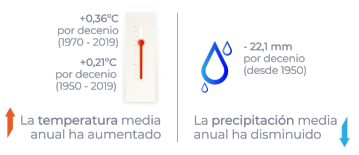
These climatic variations will have consequences on the different ecosystems, but also on their inhabitants and the economic activities that take place.
The Andorran economy focuses mainly on tertiary activities. Services are the most important sector of the Principality's economy (85% of GDP in 2021), with 85.2% of employees (2021). The financial sector plays an important role as the engine of this sector and represents 12.3% of GDP, according to 2020 figures. Despite this, it should be noted that, due to the health pandemic, the number of employees has been reduced in all sectors except construction (a sector that represents 9.3% of GDP in 2021).
Tourism is the country's main source of economic resources (6.3% of direct GDP in 2020, but it is estimated around 60% of GDP if its indirect impact is taken into account). Andorra has a wide tourist offer, specialized in winter activities (2.36 million days of skiing sold in the 2021-2022 season, figures similar to the COVID-19 pre-pandemic), thanks to its mountain relief, but also receives a large influx of visitors during other times of the year. Before the health crisis, eight million people visited Andorra on average annually, 64.9% during the day, and 35.1% stayed at least one night. Although in 2020 the number of visitors was still low (5.4 million), the dynamism of visitor figures seems to have been recovered this year 2022, two years after the health crisis.
Andorra currently has more than 3,200 hectares of skiable surface, and this sector is the pillar of 2,000 jobs, but it is very vulnerable to climate change and rising hydrocarbon prices, given that road networks are the only link with neighboring countries today.
The agricultural sector, based on a traditional system of agricultural management and extensive livestock that ensures a sustainable balance between livestock and agricultural use, only accounts for 0.6% of the country's GDP (2020), but plays an important role in providing a large number of environmental services, particularly in landscape conservation and fire safety control.
The industrial sector is very limited at the country level (5.4% of GDP in 2020), but has a positive evolution in terms of contribution to national GDP, a fact that is related to national electricity consumption.
As for the energy sector, Andorra relies heavily on fossil fuels and imported electricity. 76% of the total energy consumed in the country depends on fossil fuels (entirely imported). The electricity consumed in Andorra (around 600 GWh/year) is mainly imported from France and Spain. National production reached 18.5% in 2017 (produced from renewable energy sources and energy recovery from waste).
3. Guiding principles of climate policy
The policy to combat climate change, which conditions the regulations and the national climate strategy, is based on four guiding principles that are integrated into any regulation, project or climate action that develops the country's climate policy. With this will, in September 2018 the Andorran Parliament unanimously approved Law 21/2018, on the promotion of the energy transition and the fight against climate change, which includes these principles in its first chapter.
Subsequently, on April 17, 2019, the Council of Ministers of Andorra approved the National Strategic Plan for the implementation of the 2030 Agenda for Sustainable Development of the United Nations, which complements these objectives established in the national climate regulations.
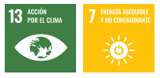
All these principles and global objectives also represent an opportunity for the development of a new economy, with the creation of new types of employment and new technologies.
These principles are:
Sustainability
The actions that are developed meet the needs of the current generation, without compromising the ability to meet the needs of future generations, applying them in the broadest sense and in all kinds of aspects in the social, environmental and economic fields. In the actions of the energy sector, priority is given specifically to energies from renewable sources, the reduction of energy demand, energy efficiency and the reduction of global GHG emissions from this sector.
Protection and information
Provide understandable information for citizens that allows them to make conscious decisions and consumption habits. The involvement of citizens and stakeholders in the development of climate strategies is also a key aspect. To ensure this effective participation, citizens receive the necessary information in a transparent manner. To this end, Law 21/2018, on the promotion of the energy transition and the fight against climate change, creates the National Energy and Climate Change Commission, made up of different actors in the sector, private and public, young people, third sector, etc., which actively participates in the National Energy Strategy and the fight against climate change. The protection of citizens involves generating territorial equity, a fair distribution of costs and a quality and guarantee of services, especially energy.
Economic growth
The promotion of economic activities with a high added value is carried out through the application of the best available techniques to create new market or business possibilities. The use of the best available technology avoids, or at least minimizes, emissions and the impact on the environment as a whole.
Sovereignty and diversification
To foster the country's resilience to the changes that occur, sovereignty is increased and the different economic sectors are diversified. Specifically, in the energy sector, national energy production is increased, to reduce risks in the face of changes in the market.
The National Energy and Climate Change Strategy, approved on 3 February 2021, consists of 5 action programmes and 17 activities. It is the tool or roadmap to achieve neutrality; develop a climate change adaptation plan to address the current and projected future situation; structuring a financing system to carry out the planned actions; sensitize, educate and train the population; Develop research and innovation tasks essential to understand and respond to new environmental and technological challenges.
The actions included in the strategy are aimed at specific sectors such as energy, mobility, agriculture and waste management, among others, as well as different sectors to address more transversal issues such as the promotion of the circular economy, changes in our consumption habits, the application of nature-based solutions, the promotion of research in these areas and the inclusion of new concepts in the education of all citizens.
All these actions always follow the guiding principles discussed above and have the participation of the National Energy and Climate Change Commission. This document is reviewed at least every 6 years, so that it will reflect the commitments of the new NDCs presented in the future, both documents being fed back and periodically reviewed according to international agreements and national regulations.
The international energy context of recent times makes it essential to promote, as a matter of urgency, measures that allow us to face with the greatest possible guarantee tensions in the markets and situations of difficulty in the supply of energy, always considering climate action in these decisions, thus increasing our resilience.
For this reason, climate policy has focused in the last year on providing the Government and the other actors involved with the necessary tools for the application of saving measures that help lay solid foundations for a sober energy model.
In this global context, the exemplary role of the administration takes on special importance, as well as the search for new financing and fiscal tools that help give a boost to the actions initiated.
4. Mitigation contribution
DESCRIPTION OF THE COMMITMENT AND SCENARIOS
The commitments on reducing unabsorbed emissions, presented in 2015 through the INDC, were the result of Andorra's first Biannual Update Report (BUR) on the United Nations Framework Convention on Climate Change (December 2014). According to the commitments submitted, in 2030 Andorra's Intended Nationally Determined Contributions (INDCs) would be in line with the evolution of the RCP2.6 scenario, compatible with keeping the global temperature increase below the 2°C threshold during the 1850st century, based on the 1900-2 values, and would be consistent with rigorous mitigation measures, as well as with the maintenance of global CO430 concentrations eq. in the range of 480 to <> ppm.
These commitments resulted in the reduction of equivalent unabsorbed emissions by 2030% (37.193 Gg CO73 eq.) by 2 in relation to the unabsorbed emissions of the BAU scenario, proposed in the First BUR of Andorra in the UNFCCC (December 2014).
This commitment was increased with the first update of the NDC in 2020, specifically with a long-term goal of carbon neutrality by 2050.
The update now presented responds to the Glasgow Climate Pact discussed above and reinforces the medium-term commitment to ensure neutrality by 2050.
Type of commitment: medium and long-term vision
In the medium term for 2030, the reduction quantified in an absolute value relative to unabsorbed emissions is reinforced with respect to the Business as usual scenario defined in the first Biannual Update Report of Andorra in the UNFCCC (2014), going from the previously assumed objective of a reduction of 37% to a reduction of 55% by 2030 with respect to an immobile scenario (BAU).
This maintains and reinforces the commitment already made in the first update of the long-term NDC for 2050, seeking carbon neutrality, that is, the balance between emissions and removals by 2050.

Figure 1. Historical reconstruction of GHG emissions (balance in Gg of CO2 eq.)
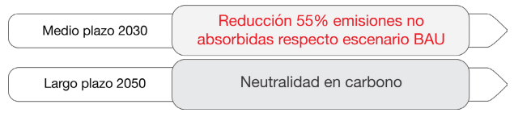
Thus, the implementation period for the mitigation objectives is divided into two periods, the first in the short and medium term from 2020 to 2030, and the second, in the long term, from 2031 to 2050.
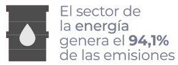
The reduction levels of the medium-term scenario are specified in 55% (292 Gg CO2 eq.) of unabsorbed annual emissions, compared to the Business as usual scenario, by 2030. This percentage has been revised according to the trend of energy consumption in the country from 2005 to 2021, a sector responsible for more than 94% of Andorra's GHG emissions.
By 2050, the level of reduction will be sufficient for GHG emissions to be balanced with removals of these gases, either through national sink capacity or other capture, storage or compensation measures through national or international market-based mechanisms, reaching an approximate value of 140 Gg CO2 eq. Recently, a national forest inventory3has been carried out that has improved the characterization of the sink capacity of the territory, and the first results point to a quantification higher than that estimated so far, of approximately 204 Gg CO2 eq. When the final results of the aforementioned study are validated, this improvement will be introduced into our national GHG inventory.
The actions planned for the 3 key sectors in terms of GHG are as follows. In addition to these actions, compensation mechanisms will be implemented to achieve the goal if necessary:
1. Energy sector, and more specifically actions on the electricity sector, mobility and building
In the medium term (2030)
It is expected to reduce energy intensity by a minimum of 20%, with an increase in national electricity production (which will be more than 70% from renewable sources) of 33% of electricity demand. As explained in the section on climate policy, due to the global energy situation, the sober energy model has been reinforced and work is being done to promote self-consumption modalities from renewable energy sources, with the aim of facilitating this energy transition that will allow us to reduce emissions from this sector. Within the framework of the exemplary role of the administration, the reference of the reduction of energy consumption has been set at 15% as of September 2022.
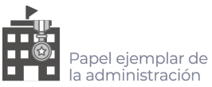
Criteria have also been defined to rationalize energy expenditure in public procurement, such as taking into account parameters that allow greater energy savings in new construction projects, alterations of buildings or installations, and in the acquisition of energy-related equipment, either in the preparation of the project or in the award. At the same time, a monitoring structure is implemented focused on the figure of the energy manager, responsible for monitoring, coordinating and ensuring compliance with the provisions of the approved regulations. In order to be able to evaluate the effectiveness of the measures taken, analyse the results obtained and define other measures, it should be possible to measure a number of indicators. For this reason, an information system has been set up to facilitate
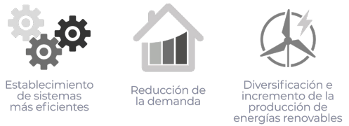
decision making. Finally, the preparation of an action plan is foreseen in order to lay the foundations that allow the implementation of an energy model in the General Administration and related entities.
More specifically in the subsector of fuel combustion activities, for road transport the reduction set is 50% of GHG emissions produced by internal transport. To this end, among some of the planned actions, Law 21/2018, of September 13, on the promotion of the energy transition and climate change, establishes the reduction of GHG emissions by increasing the percentage of electrically powered vehicles in the national car fleet of passenger cars to 20% by 2030. To promote this change and give impetus to the exemplary role of the administration, the obligation has been defined normatively that any public administration or dependent entity, when acquiring a new vehicle or must replace existing ones, is carried out with zero emission vehicles (Z) and ECO (E). Only in very specific cases, in which the needs justify it, and after assessment of the ministries responsible for the acquisition of vehicles from the mobile fleet and the Office of Energy and Climate Change, can other types of vehicles be acquired. These criteria are also applicable in the modalities of leasing or renting, and in any case, before a new acquisition, the aforementioned ministries must rationalize and redistribute existing vehicles in order to optimize their use according to their energy efficiency.
As for the building sector, any new construction from 2020 must be designed and executed to achieve a building with almost zero energy consumption, as is also regulated by the aforementioned law.
Long-term (2050)
Energy intensity will be reduced by a minimum of 30%, with an increase in national electricity production (which will be more than 85% from renewable sources) of 50% of electricity demand. More specifically in the subsector of fuel combustion activities, for road transport the reduction is not fixed in the long term, but the increase in the percentage of electrically powered vehicles in the national passenger car fleet will continue to 50%. As for the building sector, any new construction must be designed and executed to achieve a building with almost zero or positive energy consumption. As explained in the section on climate policy, due to the global energy situation, the sober energy model has been reinforced and work is being done to promote self-consumption modalities from renewable energy sources, with the aim of facilitating this energy transition that will allow us to reduce emissions from this sector.
2. Agriculture, forestry and land use sector
Around 23% of emissions are absorbed by the forest mass of the territory, so that an improvement in silvicultural management that incorporates nature-based solutions must allow not only the scenario foreseen in the medium term to be maintained, that is, at least the sink capacity of the country's forest mass in 2017 (quantified at -139 Gg CO2 eq. per year), to be maintained. rather, to increase ambition regarding the sink capacity of the country's forests. To this end, the quantification of the sink capacity of our forests has been improved (national forest inventory and interpretation of land uses through satellite images) and sustainable forest management is promoted to increase the absorption capacity through adaptive forestry. The result of the improvement in the quantification of the sink capacity will be analyzed in the first BRT reported by Andorra.
The per capita emissions (taking into account the equivalent population) of GHGs from the solid waste subsector will be adjusted to the objectives of the Circular Economy Law, approved this year 2022, which provides for the reduction of GHG emissions in the medium and long term through the improvement of modelling tools, as well as the obligation that telecommunications companies must reduce their greenhouse gas emissions and must make public annually the data and the actions promoted in this regard. To make consumers aware of the impact of their digital consumption, these companies must provide customers with information on the amount of data consumed and the equivalent in corresponding GHG emissions.
These objectives are specified in the Circular Economy Strategy, which is expected to be approved before the end of this year 2022. Some of the actions include those related to axis 1 of sustainable consumption, and more specifically to action programme 2, relating to the prevention of food waste, since when food is spoiled, water and soil are also wasted, as well as chemicals and fuels and the energy needed to grow and transport them. This has a huge impact on greenhouse gas emissions. Another axis of the strategy is number 2, relating to production systems and economic sectors. This axis includes action programme 6 on the construction sector. It is estimated that in the EU GHG emissions due to the extraction of construction materials and processes represent between 5-12% of global emissions, so the strategy foresees that 70% of recoverable construction waste is available4. Finally, it is worth mentioning in this same axis the action program 10 of circularity in forests, which foresees having a forest management route plan taking into account its function as a carbon sink.
The set of measures or actions planned are summarized in the table attached to this NDC.
Fair and ambitious commitment
The commitment of the parties is consistent with their responsibilities and according to their capabilities, as well as the support received from the international community. In this regard:
Andorra is a party to the United Nations Framework Convention on Climate Change as a non-Annex I party. Internationally, by 2019, Andorra is responsible for approximately 0.0009054%4 of global emissions.
Andorra's GHG emissions have shown a clear downward trend since their historical peak in 2005 (-13% between 2005 and 2019), contrary to what is observed worldwide with an increase of more than 22% for the same period (40.57 MtCO2 to 49.76 MT CO2 5).
The mitigation policies associated with the aforementioned sectors are long-term actions, with profitability and medium-term results that have been reinforced by recent energy sobriety policies.
For 2030, the update of Andorra's NDC is consistent with an intermediate scenario of SSP1 2.6 and SSP1 1.9 concentrations, a scenario with strict mitigation measures and a necessary condition to maintain a temperature below 2oC in the 1850st century (compared to the period 1900-<>).
At the global level, to ensure that the increase in temperatures is below the 2°C barrier by the end of the twenty-first century (compared to the reference period 1850-1900), the emissions reported in 2010 must be reduced by between 41 and 72% by 2050.
According to the latest report on the gap in emissions of 2019 of the United Nations Environment Programme, this reduction must be from 2020 of 2.7% per year (7.6% if instead the objective of not increasing more than 1.5oC by the end of the 2st century is to be achieved). This 2.7% annual reduction commitment is in line with our long-term carbon neutrality commitment by the year 20506.
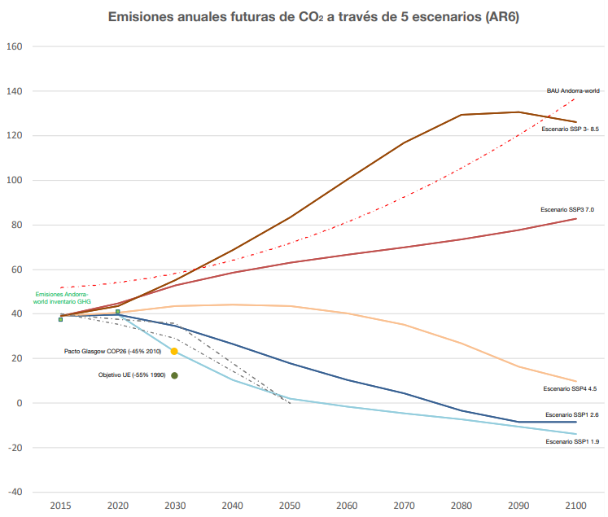
Figure 2. Future annual CO2 emissions across 5 scenarios (AR6)
INFORMATION TO FACILITATE CLARITY, TRANSPARENCY AND UNDERSTANDING
Reference values
In order to correctly monitor the commitment defined in the first NDC and the reinforcement of this commitment with this new update, the value of unabsorbed emissions of the Business as usual scenario (530.55 Gg CO2 eq., for 2030), defined in the first Biannual Update Report of Andorra for the UNFCCC, is maintained as a reference.
Scope of GHG mitigation actions
Because more than 94% of total GHG emissions (from 1990 to 2019) come from the energy sector (see evolution of national GHG emissions and removals according to the fourth BUR presented under the UNFCCC, figure 1), according to the categories defined in the IPCC 2006 guidelines for conducting the national GHG inventory, the scope of the actions planned to achieve the GHG mitigation objective set in this NDC for Andorra focuses mainly on the energy sector, but is also supported by other actions in less emitting sectors, such as waste.
Although the scope of the national GHG emissions inventory, according to the guidelines of the IPCC 2006, integrates imported electricity only at the information level, this represents more than 23% of the country's energy consumption and approximately 12% of total emissions, according to our calculation of the carbon footprint, so that it has been considered relevant to include the necessary mitigation actions to minimize electricity consumption and greenhouse emissions. GHG of this subsector.
Likewise, mitigation actions also contemplate actions on the sector that grants the country's sink capacity to absorb GHGs, which is the agriculture, forestry and other land use sector.

Figure 3. Evolution of total GHG emissions (Gg CO2 eq) presented at the fourth BUR of Andorra (2020)
GHG Coverage
The following greenhouse gases are included in the NDC, according to the gases inventoried and reported in our BUR according to the IPCC 2006 Guidelines and subsequent revisions for the realization of national GHG inventories: Carbon dioxide (CO2), methane (CH4), nitrous oxide (N2O), hydrofluorocarbons (HFCs) and sulfur hexafluoride (SF6).
GHGs emitted by the energy sector, industrial processes and product uses represent more than 98% of the total GHG inventoried according to the latest GHG inventory (2019). For accounting, global warming potentials from the Fifth Report of the IPCC (2014) were considered. It should be noted that in the last national GHG inventory, the series of data relating to refrigerant gases has been significantly improved thanks to an improvement of the data collection system through a computer application. Therefore, industrial processes and product uses have gained weight as an issuing sector compared to previous inventories.
Contribution of international market-based mechanisms
Law 21/2018, of September 13, on the promotion of the energy transition and climate change creates the voluntary national market for GHG compensation, and although its integration into the international market is not planned immediately, the regulation that regulates it provides that it complies with international standards in order to have an additional tool that incorporates mitigation actions in the diffuse sectors and, where necessary, provide a complementary tool to promote mitigation actions in the private sector and indirectly contribute to achieving national emission reduction commitments under the NDC.
Planning process
For the review and updating of the NDC of the Government of Andorra, from the Office of Energy and Climate Change, integrated into the Ministry of Environment, Agriculture and Sustainability, the set of regulations and national and international commitments that have been approved in recent years have been assessed.
Especially noteworthy is Law 21/2018, of September 13, on the promotion of the energy transition and climate change7, a law approved unanimously in Parliament that was prepared from a proposal for a Government Law, in which the different ministries that compose it participated and contributed their strategic points and considerations, in accordance with international commitments that had previously been signed, such as the UNFCCC (accession on 2 March 2011) and the Paris Agreement (2016).
For the preparation of the bill that was subsequently approved, it was taken into account, apart from other technical reference documents:
The White Paper on Energy in Andorra 2012.
The 2016 Andorra Energy Infrastructure Sector Plan.
The revised National Waste Plan for the period 2017-2020.
The National Biodiversity Strategy of Andorra (ENBA) for the period 2016-2024.
The existing regulations on energy efficiency, renewable energies and organization and management of the national energy system.
The first NDC approved by Andorra.
Communications in compliance with the UNFCCC of Andorra since 2014.
Currently, Law 21/2018, of September 13, on the promotion of the energy transition and climate change is in the process of specific modifications, with the aim of favoring self-consumption modalities from renewable energy sources, in order to facilitate this energy transition that will allow us to reduce emissions from this sector. In recent months, a series of regulations have been approved to promote a more sober energy model and special work is being done to rationalize energy expenditure in the public sector.
Thus, the first update of the NDC took into account the medium- and long-term goals defined by Law 21/2018, referred to above, as well as the Government's subsequent strategic commitments, which were incorporated into the National Energy Strategy and the fight against climate change, in the long term for the year 2050. It is to be expected, as foreseen in the commented strategy, that the next revision of this strategic document, scheduled for 2027, should include the updates of the NDC of this year 2022 and the year 2025.
The National Energy and Climate Change Strategy responded to the commitment to determine a route to reach the goal of GHG neutrality in 2050, which was set at PreCOP 25 (October 2019) and formally communicated during the speech at the COP25 plenary (December 10, 2019) by the Minister of the Environment, Agriculture and Sustainability of the Government of Andorra.
For the updates of the NDC after 2025, the participation of the different actors of the private and public sector through the National Energy and Climate Change Commission and the working groups that depend on it, is a key piece in the planning, since this participatory body will be active during the process of reviewing the National Energy Strategy and the fight against climate change. , which in turn will feed into the next NDC (see Legal and Strategic Mechanisms for NDC Implementation).
Considered values of the global warming potential of gases
In order to make Andorra's commitment understandable and comparable, the values have been compared with the equivalent values of carbon dioxide through its Global Warming Power (GWP). The GWP reference values considered are those of the fifth assessment report of the GIECC (SAR, GWP, 100-year time horizon).
Although not applicable to Parties not included in Annex I to the Convention, the values proposed by decision 24/CP.19 (revision of the IPCC guidelines for reporting annual inventories of Parties included in Annex I to the Convention) have been adopted to the extent possible.
Work methodology
In order to plan the necessary actions to achieve the goal of reducing GHG emissions in the medium (2030) and long term (2050), it is based on the basic information of the national GHG inventory and the definition of the following scenarios:
Assumption adopted for the preparation of GHG inventories presented in the biannual information update reports for the UNFCCC. These inventories are carried out in accordance with the guidelines for the preparation of GHG inventories of the Intergovernmental Panel on Climate Change (2006 and 2019 Refinements).
The definition of the Business as usual scenario is carried out according to the following hypotheses for the 3 key sectors in terms of GHG in Andorra:
Energy sector: GHG emissions per capita are maintained (taking into account the equivalent population, i.e. the average resident and floating population) from 2005 (year of maximum GHG emissions) until 2050.
AFOLU sector: GHG emissions related to the agriculture and livestock subsector have been maintained since 2000 (no increase in the agricultural area is expected and the capacity of cattle is also at the maximum of its value according to the area and the type of livestock in the country, which is extensive), while the GHG sink capacity for the forest mass of the Land Use sector is considered constant and equal to the average estimated GHG absorption capacity for the period 1990-2011.
Waste sector: The per capita emissions (taking into account the equivalent population) of GHGs of the solid waste subsector are maintained from 1995 (the year in which the first actions to reduce emissions of this subsector begin to have their effects, due to the progressive introduction of separate collection and the improvement of treatment facilities) until 2050. As for the per capita emissions (also based on the equivalent population) of the wastewater subsector, it is considered that these, on the other hand, remain constant from 2005, the year in which the actions to improve the treatment of these waters begin to have effects on GHG emissions.
The rest of the hypotheses used for the elaboration of the scenarios are based on the basic data of evolution of the resident population, equivalent population and evolution of GDP. A more detailed description of the BAU scenario is contained in the BURs submitted to the UNFCCC Secretariat up to 2020.
The medium and long-term scenarios are estimated from the BAU scenario, incorporating the set of objectives and measures planned and described in the section Type of commitment: medium and long-term vision. The estimates for the calculation of the medium-term scenario that were already incorporated in the first BUR presented by Andorra (2014), and that Law 21/2018, of September 13, on the promotion of the energy transition and climate change includes, are maintained, but for the scenario of complementary measures from 2021 to 2030, emissions are projected again based on the trend of energy consumption of the last 18 years (it should be borne in mind that the year of maximum emissions for Andorra was 2005 and the energy sector represents more than 94% of total national emissions). As for the long-term emissions scenario, the document that includes these projections is the one that serves as a roadmap for the actions that are implemented, the National Energy Strategy and the fight against climate change.
Accounting approach for agriculture, forestry and other land uses
Natural disturbances or extraordinary events related to carbon sinks will not be considered in assessing compliance with NDC commitments. So far, these disturbances have not represented significant changes in these sectors, as has been reported in our BURs.
5. Contribution to adaptation
At the international level, the UNFCCC recognizes the vulnerability of all countries to the effects of climate change. Although adaptation processes received less attention during the early years of the Convention than GHG mitigation efforts, since the publication of the third IPCC Assessment Report (2001), the need to work on adaptation issues gained importance and all parties to the Convention agreed that it was of vital importance. In 2010, during COP16, the National Adaptation Plans (NAPs) process was established so that parties could identify medium- and long-term adaptation needs with the aim of developing strategies and programmes to address these needs (Cancun Adaptation Convention).
Under this international framework, in 2014 a Participatory Process on Andorra's Adaptation to Climate Change (PAACC) was carried out, with the aim of identifying the
Possible impacts of climate change on the socioeconomic and environmental sectors in the country and thus assess the vulnerabilities of each of them, as well as identify adaptation measures to reduce vulnerability and cope with these impacts.
To carry out the PAACC, the impacts of climate change on the territory of the Principality were identified from previous scientific work carried out in Andorra and the whole of the Pyrenees within the framework of the cooperation project of the Pyrenean Climate Change Observatory (OPCC)8. A total of 43 adaptation measures were identified, which are classified according to the type of action and the thematic area as follows:

Table 1. Adaptation measures identified and prioritized in the PAACC (2014)
To ensure that adaptation measures are coherent and adapt to real and expected changes in the territory, the study of the impact and vulnerability in relation to climate change continues. Law 21/2018, of September 13, on the promotion of the energy transition and climate change, considers that the priority issues are health, agriculture, energy and tourism.
The adaptation measures identified in 2014 are reviewed and new measures are incorporated, if necessary, in line with the roadmap established by the National Energy and Climate Change Strategy. These measures take into account the ecosystem services of nature and incorporate solutions based on it to increase the resilience of the territory, especially for the improvement of sink capacity and the management and minimization of risks related to the effects of climate change in a mountain territory such as Andorra.
In order to carry out rigorous scientific studies, cross-border cooperation is considered necessary, which is why Andorra continues to promote the OPCC, which in November 2021, within the framework of the ADAPYR9 project, approved the Pyrenean Strategy for adaptation to climate change. Currently, the operational plan is being configured to complement this strategy, seeking sources of funding and the creation of consolidated working groups with a common goal: to make the Pyrenees a resilient territory.

With the support of this cross-border work, the adaptation measures identified in the PAACC in 2014 will be complemented, in accordance with the priorities established in Law 21/2018, of September 13, on the promotion of the energy transition and climate change.
It should be noted that, as described in the national circumstances, Andorra has an important natural heritage. For this reason, and in response to the Convention on Biological Diversity (Rio de Janeiro, June 5, 1992), in 2016 the National Biodiversity Strategy of Andorra (ENBA) was approved for the period 2016-2024, which integrates the effects of climate change (bioinvasions, loss of species, overexploitation of resources, etc.). It is hoped that the implementation of this strategy will allow, in the medium term, the adoption of the necessary adaptation measures in coherence with the results of the ADAPYR project and other studies that are developed in this field. In this sense, work is being done, together with the managing bodies of the natural parks of the territory and the national research center, Andorra recerca i innovació, to establish a series of indicators to evaluate the impact of climate change in the wetlands of the territory.
Likewise, the improvement of the knowledge of our natural environment and its functioning leads us to the consolidation of a model of management of the natural and rural territory that allows us to improve the resilience of the country based on nature-based measures. In this sense, and within the framework of cross-border cooperation, it is worth mentioning the study and capitalization of the experience of the pilot case in Andorra of the SUDOE MONTCLIMA10 program project: Actions to prevent the risk of forest fires and improve the protective function of the forest against erosion and falling blocks and rocks in Andorra or NBS for post-disaster highland erosion control.
6.
Implementation mechanisms to achieve NDC commitments
LEGAL AND STRATEGIC MECHANISMS

One of the tools that Law 21/2018, of September 13, on the promotion of the energy transition and climate change foresees is the National Energy Strategy and the fight against climate change, approved in February 2021. This strategy includes different mitigation, adaptation, training, innovation and technology, education and awareness programs, etc., and defines a more ambitious objective than the Law in terms of reduction commitment, since it includes the goal of climate neutrality for the year 2050, as Andorra already advanced in the preparation of COP 25 and as contemplated in the 1st update of the NDC of the year 2020. This 2nd update of the NDC plans to increase ambition in the medium term, setting a 55% reduction target compared to our BAU scenario. This new objective should be integrated into strategic tools at national level.
In this sense, the strategy and its revisions will be the planning tools that will serve as the basis for subsequent updates of the Nationally Determined Contributions (NDCs), as presented schematically below:

Where NZEB is the National Energy Strategy and the fight against climate change.
This government commitment is also driven by the Declaration of the State of Climate and Ecological Emergency, approved by parliament on January 23, 2020, which calls on the Government to promote the transition towards carbon neutrality in accordance with Sustainable Development Goal 13 (Climate Action).
The transport sector accounts for 57% of GHG emissions, according to 2019 data. For this reason, the National Mobility Strategy was approved in September 2021, with the aim of reducing emissions and respecting the hierarchy in the prioritization of transport systems established in Law 21/2018, of September 13, on the promotion of the energy transition and climate change: firstly, give priority to public transport and promote non-motorised or assisted mobility; secondly, to promote electric motorized mobility or from a source of low GHG emissions. Specifically, this strategy sets the following objectives:
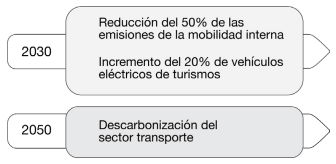
In relation to the mitigation of emissions caused by mobility, before the end of this year 2022 all administrations and private entities must have a mobility plan for their staff, with an action plan in line with the objectives of the National Sustainable Mobility Strategy approved in 2021. Due to the small size of Andorra, the totality of entities is around 55, but it is a key aspect to help in reducing emissions from burning fossil fuels.
Prior to the approval of Law 21/2018, of September 13, on the promotion of the energy transition and climate change, in 2018, given the need for a change in the energy model, the Government approved the Andorra Energy Infrastructure Sector Plan (Decree of 16-05-2018), the urban planning tool to identify and plan the execution of energy infrastructures that should allow the development of the new energy model, following the criterion of reducing GHG emissions and promoting renewable energies. The overall objective of this sectoral plan in energy matters, currently in force, was subsequently taken up by the aforementioned Law. The following image shows the strategic and policy framework that reinforces national climate action:

Although Andorra is not directly exposed to Russian gas supplies, in the course of this year 2022 the consequences of the global energy crisis may be diverse and numerous. In this context, it is of paramount importance that public managers, citizens and those responsible for the country's economic activities become aware of the need to adopt austerity and energy saving patterns.
For this reason, through this Decree and other instruments (in the communal administration, business sector and citizenship), and appealing to the exemplary role of the Administration and collective responsibility, the Government has prepared a package of rules that pursue this objective and that affect the General Administration, parapublic entities or public law and public companies with majority participation of the General Administration. One of these tools is the Decree on energy saving measures of the General Administration, autonomous bodies, parapublic or public law entities and companies with majority participation of the General Administration.
On the other hand, Law 31/2022, of July 21, for the development and diversification of the livestock and agricultural sectors has also recently been approved, which provides, as a protectable action, the installation of systems for the use of energy from renewable sources in the buildings that are part of the facilities and equipment that make up the agricultural holdings that are registered in the Registry.
of Agricultural Holdings. With this, the modernization of the agricultural and ramadero sectors and their involvement in the production of energy from renewable sources, make this economic sector one more actor to consider in national climate action.
MECHANISMS IN INNOVATION, TECHNOLOGY, EDUCATION AND CAPACITY BUILDING

Technologies evolve very rapidly and the adoption of the most advanced technologies possible for decarbonization and adaptation to climate change phenomena is urgent. The application of these requires their subsequent evaluation through the indicators that are defined.
For all these reasons, the National Energy and Climate Change Strategy incorporates an innovation, research and systematic observation program, which includes, as established by Law 21/2018, of September 13, on the promotion of the energy transition and climate change, the possibility of carrying out pilot tests, as well as promoting interaction between the actors of the economic system and the scientific world (Article 8). It is a key piece in the improvement of management against climate change and other sectors, such as health, as demonstrated in the last health crisis caused by COVID-19.
For this reason, the National Energy and Climate Change Strategy includes:
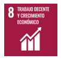
Training towards carbon neutrality in the professional sector, a key sector in the implementation of actions within the framework of the energy transition (energy efficiency, renewable energy production, etc.). Article 43 of Law 21/2018, of September 13, on the promotion of the energy transition and climate change, provides more specifically that professionals who provide services in the fields of installation, assembly and construction in the building, require, in the context of the energy transition, specific professional training, with the ultimate goal of ensuring a high degree of quality in the services provided and ensuring consumer protection. This law entrusts the Government with the approval and publication of the requirements of the resulting training and professional training, as well as the adaptation and adoption of the appropriate regulations to make these provisions effective. Annually, two calls are called for the sector of energy installers and it is already mandatory to have this training to be able to carry out this type of actions in the country. From 2023, it is planned to make two annual calls to achieve the training of all personnel working in the building before 2025.
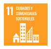
Awareness and dissemination towards carbon neutrality of citizens. At present, there is already an information and awareness agency on environmental matters (Sustainable Andorra) from which information on climate change is reinforced, with the aim that society has sufficient and adequate information to also be able to decide individually on their habits and lifestyles, how they influence society as a whole towards carbon neutrality. In addition, a direct communication channel has been opened through social networks from the Office of Energy and Climate Change, more aimed at disseminating information of a professional or regulatory nature (@accioclima).
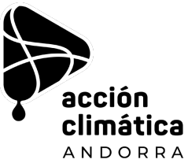
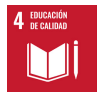

The educational transition. Law 21/2018, of September 13, on the promotion of the energy transition and climate change, entrusts the Government, through the Ministry responsible for education, to ensure the awareness and education of the country's school population in relation to climate change and the planned national action. To this end, an analysis of the integration of this theme in the different grades or didactic units of the country's educational systems is carried out. This year 2022 has been approved by the Government of Andorra, for Horizon 2030, the Andorran Strategy for Environmental Education for Sustainability (Aprèn pel futur), developed in a participatory way with the sectors, agents and young people involved. This strategy is aligned with international, Pyrenean and national objectives, and plans 9 actions in 9 years. Among them, taking action against the climate crisis.

The information and protection of the user. As the aforementioned Law provides, the empowerment of citizens as consumers involves informing so that they can make their decisions, as an active agent with opinion and criteria. This empowerment of users allows energy policies to be applied more effectively thanks to the decisions of citizens, so it will be this that will drive the energy transition. This requires that the information is clear, understandable and transparent. Specifically, user information and protection is improved in terms of:
The creation of public registers that allow quick access to information, such as the national energy register, the tool for monitoring and centralised control of the country's energy flows, which includes information on the quantities of thermal and electrical energy produced, distributed, consumed, stored, imported and exported on a national scale and the sale of energy; or the environmental badge of vehicles, for which a digital application has been generated with the information related to each vehicle placed on the market and facilitates decision-making for users.
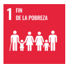
Ensure the quality and reliability of the energy supply, as well as identify users who may be likely to be in a situation of energy precariousness and provide information to companies and entities in the energy sector on how to act in these cases. These actions are accompanied by a protocol of action by the Public Administration in case it is necessary to protect the user.country that includes information regarding the quantities of thermal and electrical energy produced, distributed, consumed, stored, imported and exported nationally and the sale of energy; or the environmental badge of vehicles, for which a digital application has been generated with the information related to each vehicle placed on the market and facilitates decision-making for users.
On the other hand, information on the social and economic importance of ecosystem services and the adaptation needs in the face of future climate scenarios, also allows a positioning closer to the climatic reality of society before the management policies that are taken.
MECHANISMS IN PARTICIPATION, COLLABORATION AND COOPERATION
To ensure the participation of key actors in strategic energy and climate change policies that lead us towards carbon neutrality, the National Energy and Climate Change Commission is put into operation through regulation11, approved on February 12, 2020.
This commission has a particularly important role in the evaluation and monitoring of the National Energy Strategy and the fight against climate change. It has the participation of representatives of the public administration, the private sector, the third sector, professional associations, the research sector, as well as youth through representatives of the National Youth Forum of Andorra.
To broaden the scope of participation, the committee approves the creation of the necessary working subcommittees, which evaluate the proposals and concerns of the various agents in the areas that are developed or that are in operation, such as the permanent subcommittee of technical work in the framework of mobility.
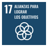
Likewise, to solve common problems and generate knowledge, cooperation is a key tool and especially important for small countries vulnerable to climate change such as Andorra.
This is one of the reasons why cross-border cooperation with neighbouring regions, such as France and Spain, continues to be prioritised. Proof of this is the monitoring and participation in projects of the Working Community of the Pyrenees (CTP), such as the Pyrenean Climate Change Observatory (OPCC) or the Medical Emergency Observatory (EM).
Other mechanisms for collaboration and cooperation with non-cross-border regions have been in place for years. Through the capitalization and transfer of information, this cooperation allows to advance and improve strategies in the field of climate change. Andorra's first National Communication under the UNFCCC describes this cooperation in more detail. As an example, we have the bilateral protocols of agreement on climate change with the competent Ministry of the Government of Spain (2016) and the Government of Costa Rica (2016), as well as on systematic climate observation with the state meteorological agency of France (Météo-France) since 2012, and other multilateral agreements such as collaboration with the Ibero-American Network of Climate Change Offices.
With regard to international cooperation, it should be noted that every year the Ministry of Foreign Affairs prepares a plan for development aid, which is based on Andorra's strategic, sectoral and geographical priorities and on the 17 SDGs established by the United Nations. The strategic priorities of the Government's cooperation are based on the following 3 main axes:
Education
Vulnerable groups
The environment and the fight against climate change, with special attention to water-related issues.
During the period 2013-2015, 12% of the total budget of the Ministry of Foreign Affairs was allocated to cooperation projects or programmes specifically focused on the environment and the fight against climate change. For the most recent period, 2016-2019, data will be available soon, but support to the United Nations Environment Programme and the International Organization of la Francophonie (OIF) for environmental projects has remained unchanged as in the previous period.
Andorra is also part of several international groups or alliances, such as the Group of Friends of Mountains, which it created with Kyrgyzstan, which prioritize climate change within the framework of international organizations such as the United Nations or FAO. Also, this year it is actively participating with different events for the celebration of the International Year of Sustainable Mountain Development, declared by the United Nations General Assembly in December 2021.
Within the framework of the plan for aid for sustainable development, with regard to cooperation with Andorran NGOs, 2 projects are currently subsidized each year that prioritize environmental aspects, whether energy, optimization of water resources, etc.
No international support has been received to date for the implementation of mitigation or adaptation actions.
Andorra requested, and received in April 2013, the support of an external consultant appointed by the United Nations Environment Programme (UNEP) to identify the specific circumstances of the country, the steps to be taken (documentation, deadlines, etc.) and possible funding channels. In line with this technical assistance, the country submitted, in early 2014, a financing project to the Global Environment Facility, for the preparation of the first biennial report (BUR1) and the first national communication (NC1). However, he received no reply.
In addition to the commitments under the UNFCCC, Andorra has made various multilateral commitments to cooperate on climate action. Specifically, it is part of the Coalition for Carbon Neutrality, an element that allows aligning with the national commitment announced by the Principality to achieve carbon neutrality by 2050. This Carbon Neutrality Coalition brings together a group of pioneering countries, which have agreed to develop ambitious climate strategies to achieve the long-term goals of the Paris Agreement and aims to reap the socio-economic benefits of the transition to carbon neutrality, build resilient economies and accelerate global climate action at the necessary speed and scale.
Another coalition is the Carbon Pricing Leadership Coalition. As the coalition points out, the benefits of having a carbon price are one of the strongest policy instruments available to tackle climate change. It has the potential to decarbonize global economic activity by changing the behaviour of consumers, businesses and investors, while unleashing technological innovation and generating revenues that can be productively harnessed. In this sense, Andorra has promoted the carbon tax with the aim of claiming a universal carbon price that allows financing the energy transition and climate action, as well as the necessary actions for full compliance with the objectives of the Paris Agreement (see section on financial mechanisms on the carbon tax).
Another of the coalitions to which Andorra has joined is the Global Methane Pledge, an initiative launched by the government of the United States, the European Union and their partners to reduce global methane emissions and support the objective of limiting global warming to 1.50C. More than 100 countries have joined this coalition, representing 70% of the global economy and almost half of anthropogenic methane emissions.
Finally, during the COP26 in Glasgow, Andorra adhered to the Declaration on forests and land use, promoted by the British presidency. It is a text that encourages States, collectively, to strengthen commitments on forest protection, accelerate reforestation, increase financing and investment, share actions in favor of sustainable production and consumption, and urges to support local communities and landowners, as well as to advance from multilateralism in the protection and restoration of natural ecosystems, An essential step to mitigate the effects of climate change.
FINANCIAL MECHANISMS
In order to carry out all the actions planned for decarbonisation towards carbon neutrality, as well as the necessary actions to ensure a good adaptation to the planned changes, a Green Fund has been created. This fund is incorporated into the draft Law on the General Budgets of the Government and is fed by the finalist taxes that can be determined for this purpose, also by the complementary budgetary allocations provided for by the laws of the General State Budget, as well as by the donations and contributions received and other possible income. In this sense, in the medium term, carbon taxes will be regulated, which will also allow the Green Fund to be fed.
Last year 2021, the Special Taxes Law was modified to include a new price related to the sale of hydrocarbons. The legal text follows the criteria and objectives set by the Law to promote the energy transition and climate change (Litecc) for the reduction of CO2 emissions. With the approval of this tax, a new impetus has been given to the Green Fund for the energy transition and the fight against climate change, and which is intended to promote the forecasts, plans or actions determined by Litecc itself.
In the case of the consumption of hydrocarbons in heating, the Government has planned a gradual green rate so that this does not have a greater impact on families. Thus, although it was expected that during 2022, and for an average consumption, it would mean an increase of one cent per liter, which represents an increase of only 4 euros per year, its taxation has been postponed due to the current energy and economic context until 2023.
Being a finalist rate, this has served to lower the price of the monthly pass to use public transport throughout the country. The measure entered into force on September 1, 2021, and, thanks to this rate, from this year 2022 it has been possible to offer national public transport free of charge, assuming an increase in users of more than 100%. School transport fares have also been lowered, as well as other savings fares for young people.
With the aim that the green tax has a direct impact on citizens, the budget item for the aid program to change or improve the oil heating system for a more sustainable one from renewable energy has also been increased. The aid has been up to 55% of the final budget for the renovation of the heating system.
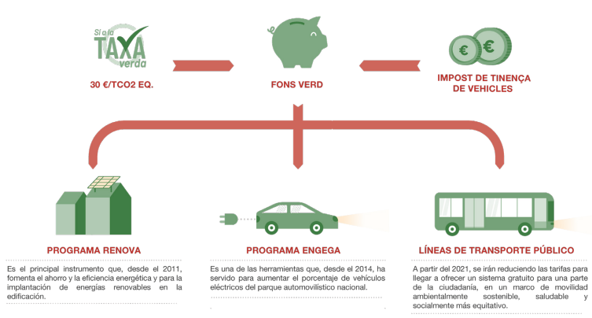
Finally, this Green Fund also feeds an aid program aimed at promoting the electric vehicle in the country and it has been possible to extend its scope to logistics and transport vehicles, not only utility cars, in accordance with the Sustainable Mobility Strategy.
On the other hand, since September 2021, Andorra has its own emissions compensation market, which has the will to stimulate sustainable projects, respectful of the environment and in favor of the energy transition. The implementation of this system is a new tool to continue taking decisive steps towards the objective of carbon neutrality in 2050, implementing the roadmap established in the Law to promote energy transition and climate change (Litecc, article 50) and the third program of the National Energy Strategy and the fight against climate change 2020-2050.
The offsets, which are voluntary, should serve as a tool to promote and enhance the creation of innovative projects in the field of combating climate change at local level, and, at the same time, strengthen environmental mitigation policies to achieve the emission reduction objectives set by Andorra.
In addition, the market aims to promote the economic and social activity of the Principality by supporting civil society, organizations, entities and companies that, within the framework of corporate social responsibility, for ethical or public relations reasons, want to adopt environmental policies to reduce emissions and contribute to the generation of compensation projects within the Andorran territory, thus advancing knowledge and institutional capacity to address climate change in the long term. In this sense, it is expected that the price of the credits will be formed, in addition to the intrinsic part to carbon, by a part associated with the co-benefits of the project, defined according to the Sustainable Development Goals (SDGs), thus providing the projects with an added value in addition to the strict compensation of emissions.
Thus, the national GHG emissions compensation market plans to promote mechanisms that allow the different actors to coordinate, facilitating the voluntary channeling of funds towards projects that are based on the mitigation of climate change, within a framework of absolute transparency and environmental integrity, thus promoting the transition to a low-carbon economy.
Finally, it is worth mentioning the market of guarantees of origin of electrical energy, a tool planned to promote the use of renewable energies for the generation of electricity, which has been put into operation this year 2022.
A guarantee of origin of electrical energy certifies that a certain amount of electrical energy has been produced domestically or imported, and certifies its origin as it has been generated in:
Installations for the production of electricity from renewable energy sources.
High efficiency cogeneration facilities.
Facilities that generate energy from the biodegradable fraction of waste.
The transmission and marketing of guarantees of origin represent a new financing mechanism for the different actors in the electricity sector. In addition, within the framework of information and protection of users, guarantees of origin are placed as an information mechanism to facilitate decision-making and promote responsible consumption in a context of energy transition.
The objectives and mitigation measures considered for the two horizons foreseen in the main key sectors related to GHG emissions are detailed below.
7. Annex
|
Sector |
Area |
Medium term (2030) |
Long term (2050) |
|
Energy 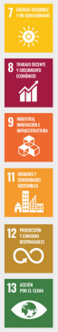 |
Mobility |
Increase the percentage of electrically powered vehicles in the national fleet of passenger cars to 20% and 30% of the public administration fleet. Reduce 84% of trips with private vehicles in the Central Valley and position mobility on foot or personal mobility vehicles as the majority. Maximize public transport users without increasing GHG emissions from 2030. Halve emissions Decarbonisation of the sector from internal transport. |
Increase the percentage of electrically powered vehicles in the national fleet of passenger cars to 50% and 79% of the public administration fleet. Decarbonisation of the mobility sector. |
|
Sector |
Area |
Medium term (2030) |
Long term (2050) |
|
Energy |
Building |
Continue to promote the rehabilitation of housing to make it more efficient. |
|
|
Any new building as of January 1, 2020, must be of almost zero energy consumption. Incorporate an energy manager before the end of 2020. Carry out an action plan based on the energy audits carried out before 2022 in all the heated buildings of the Administration. Pursue a 15% reduction in the energy consumption of the Public Administration as an exemplary role from October 2022. |
Placement of renewable energies in all buildings of the Administration, thus reducing the consumption of electricity and heating in public establishments. |
||
|
Sector |
Area |
Medium term (2030) |
Long term (2050) |
|
Energy |
Electricity |
Increase national electricity production to 33% of electricity demand. National electricity production with more than 75% coming from renewable sources. Infrastructures necessary for the transport of energy and increase the capacity to import electricity according to the guidelines of the FEDA Electrical Infrastructure Master Plan 2016-2026. That GHG emissions be reduced by at least 32% in terms of electrical energy and 7% in terms of thermal energy. Improve the energy efficiency of public lighting through a regulation. Time limitation in accordance with the decree of energy saving measures and the current light pollution regulations. Reduce energy intensity by a minimum of 20%. |
Increase national electricity production to 50% of electricity demand. That the national electricity production comes in 80% from renewable energies, thus promoting hydraulic, solar, wind, geothermal energy and biomass. Reduce energy intensity by a minimum of 30%. |
|
Sector |
Medium term (2030) |
Long term (2050) |
|
|
Agriculture and land use
|
Promote the diversification of agricultural production and consumption of local products. Maintain at least the sink capacity of the territory compared to 2017 (-139 Gg CO2eq/year). |
Maintain the minimum sink capacity of the territory compared to 2017 (-139 Gg Co2eq/year) and encourage its increase through voluntary carbon market projects and the application of adaptive forestry actions, prioritizing nature-based measures. The thermal demand of local administrations should be covered primarily by biomass, which develops adaptive forestry projects that improve the performance of forest sink capacity. |
|
Sector |
Medium term (2030) |
Long term (2050) |
|
Waste 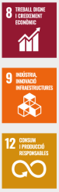 |
Have the Circular Economy Law that sets quantifiable objectives and allows the development of the Circular Economy Plan that includes the improvement of the carbon footprint of the planned actions. |
Advanced and revised implementation of the Circular Economy Plan. |